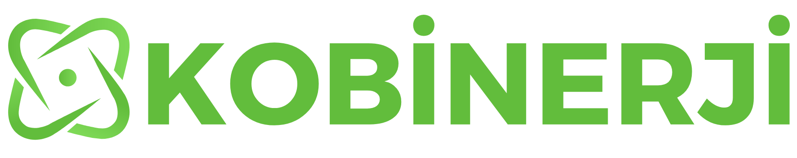

| Proje Numarası | 7260634 |
|---|---|
| Projenin Adı | Elektrikli Araç Bataryaları İçin Yapay Zeka Destekli Yeşil Dönüşüm ve Analiz Sistemi |
| Proje Başlama Tarihi | 01.03.2026 |
| Proje Bitiş Tarihi | 01.09.2027 |
| Proje Süresi | 18 ay |
| Destek Süresi | 18 ay |
| Teknoloji Grubu | ELEKTRİK-ELEKTRONİK TEKNOLOJİLERİ GRUBU |
| Yasal/Özel İzin | Proje çalışmaları yasal/özel izin gerektirmemektedir. |
Teknoloji Hazırlık Seviyesi İlerlemesi
Başlangıç: THS 3 (Kritik işlev kanıtlandı) → Hedef: THS 7 (Prototip operasyonel ortamda gösterildi)
| Kod | Alan |
|---|---|
| 40.90.100 | Teknik Bilimler > Bilgisayar Bilimleri > Yapay Zeka, Bilgisayarda Öğrenme ve Örüntü Tanıma |
| 40.110.30.20 | Teknik Bilimler > Elektrik-Elektronik Mühendisliği > Enerji > Doğrudan Enerji Dönüşümü ve Enerji Depolaması |
| 40.110.40 | Teknik Bilimler > Elektrik-Elektronik Mühendisliği > Güç Elektroniği |
| Adı, Soyadı | CEM BÜLBÜL |
|---|---|
| Unvanı/Görevi | Kurucu / Yönetici |
| Yazışma Adresi | Kemalpaşa OSB Mahallesi, Gazi Bulvarı No:177 İç Kapı No:19 Kemalpaşa OSB 35370 Kemalpaşa İzmir |
| Telefon | 232-5045005 |
| E-Posta | info@kobinerji.com |
| Kuruluş Adı | KOBİNERJİ MÜHENDİSLİK VE ENERJİ VERİMLİLİĞİ DANIŞMANLIK ANONİM ŞİRKETİ |
|---|---|
| Kuruluş Türü | Anonim Şirket |
| Kuruluş Ölçeği | KOBİ (Küçük) — Özel Sektör |
| Vergi Dairesi | Kemalpaşa |
| Vergi Sicil No | 5641385589 |
| Kuruluş Tescil Tarihi | 13.06.2024 |
| Ticaret Sicil No | 256557 |
| Kuruluş Yetkilisi | CEM BÜLBÜL — Yönetici |
|---|---|
| Kuruluş Ortakları | CEM BÜLBÜL — Ortaklık yüzdesi: %100 |
| Birimi | Doktora | Yüksek Lisans | Lisans | Teknik/Meslek | Lise | Toplam |
|---|---|---|---|---|---|---|
| Üretim | 0 | 0 | 0 | 0 | 0 | 0 |
| Ar-Ge | 0 | 1 | 4 | 0 | 0 | 5 |
| Diğer | 0 | 0 | 0 | 0 | 0 | 0 |
| Toplam | 0 | 1 | 4 | 0 | 0 | 5 |
KOBİNERJİ Mühendislik ve Enerji Verimliliği Danışmanlık A.Ş., elektrik-elektronik mühendisliği, enerji verimliliği çözümleri, elektrik tesis projelendirme ve endüstriyel tesislere yönelik mühendislik hizmetleri alanlarında faaliyet göstermektedir. Kuruluş; güç dağıtım sistemleri, kompanzasyon, enerji etütleri ve saha mühendisliği uygulamalarında edindiği deneyim ile teknik analiz ve uygulama süreçlerini bütüncül şekilde yürütebilmektedir.
Kuruluşun temel yetkinlikleri; enerji sistemlerinin analizi ve optimizasyonu, saha tecrübesine dayalı çözüm geliştirme ve güç elektroniği tabanlı yaklaşımları uygulayabilme kabiliyetidir. Bu yetkinlikler, karmaşık enerji problemlerine hızlı ve uygulanabilir çözümler üretilebilmesini sağlamaktadır.
Kuruluşun vizyonu, enerji sistemleri ve enerji depolama teknolojileri alanında Ar-Ge odaklı, yenilikçi ve ticarileşebilir çözümler geliştiren bir mühendislik yapısına dönüşmektir. Bu kapsamda, yalnızca hizmet sunan değil, aynı zamanda teknoloji geliştiren ve ürün ortaya koyan bir yapıya evrilme hedeflenmektedir.
Önerilen proje, kuruluşun mevcut teknik birikimi ile doğrudan ilişkili olup, enerji sistemleri alanındaki deneyimin yapay zekâ tabanlı analiz yöntemleri ile birleştirilmesini mümkün kılmaktadır. Bu yönüyle proje, kuruluşun Ar-Ge kapasitesini güçlendirecek ve enerji depolama teknolojileri alanında stratejik bir konum elde etmesine katkı sağlayacaktır.
Elektrikli araçların yaygınlaşmasıyla birlikte, kullanım ömrünü tamamlayan lityum-iyon bataryaların yönetimi önemli bir sorun haline gelmiştir. Mevcut yaklaşımlarda bu bataryalar çoğunlukla doğrudan geri dönüşüme yönlendirilmekte, ancak ikinci ömür kullanım potansiyeli yeterince değerlendirilememektedir.
Bu projenin amacı; söz konusu bataryaların sağlık durumunu (SoH) hızlı ve güvenilir şekilde belirleyebilen yapay zekâ destekli bir analiz sistemi geliştirmek ve uygun olanların enerji depolama sistemlerinde yeniden kullanılmasını sağlamaktır. İkinci ömre uygun olmayan bataryaların ise hammadde geri kazanım süreçlerine yönlendirilmesi hedeflenmektedir.
Bu kapsamda geliştirilecek çözüm ile bataryaların sınıflandırılması, yeniden kullanım kararının verilmesi ve geri kazanım süreçlerine entegrasyonu mümkün hale getirilerek, hem kaynak verimliliği hem de ekonomik katma değer sağlanması amaçlanmaktadır.
Projenin yenilikçi yönü; ömrünü tamamlamış elektrikli araç bataryalarının sağlık durumunun (SoH), klasik ve zaman alıcı şarj/deşarj testleri yerine, empedans tabanlı ölçümler ve yapay zekâ algoritmaları ile hızlı ve yüksek doğrulukta belirlenmesine dayanmaktadır. Bu yaklaşım, batarya analiz süresini önemli ölçüde kısaltarak pratik ve ölçeklenebilir bir çözüm sunmaktadır.
Ayrıca, farklı sağlık durumlarına sahip heterojen batarya hücrelerinin birlikte çalışmasını mümkün kılan çift yönlü aktif dengeleme temelli BMS yapısı, mevcut pasif sistemlere göre önemli bir teknik üstünlük sağlamaktadır.
Geliştirilecek yapay zeka tabanlı SoH tahmin modeli ile batarya durumunun en az %90 doğruluk oranı ile belirlenmesi hedeflenmektedir. Bu sayede yeniden kullanılabilir bataryaların doğru şekilde tespit edilmesi sağlanarak toplam batarya kullanım ömründe %20'ye kadar artış öngörülmektedir.
Mekanik geri kazanım sürecinde ise, ayrıştırma verimliliğinin mevcut uygulamalara göre en az %10 artırılması hedeflenmektedir. Bataryaların ikinci ömür veya hammadde geri kazanımına yönlendirilmesini sağlayan bütüncül yapı projenin özgün değerini oluşturmaktadır.
| Öncelikli Alan | Alan Bilgisine Sahip, Verimli, Güvenilir Modeller |
|---|---|
| Yeşil Mutabakat | Temiz ve Döngüsel Ekonomi — Kritik Hammaddelerin Geri Kazanımı |
| NACE Kodu | 72.19 — Doğal bilimler ve mühendislikle ilgili diğer Ar-Ge faaliyetleri |
| GTİP Kodu | 85 — Elektrikli Makina ve Cihazlar |
| Başlangıç THS | THS 3 — Analitik ve tecrübeye dayalı olarak, kritik işlev kanıtlandı |
| Hedef THS | THS 7 — Prototip operasyonel ortamda gösterildi |
Elektrikli araçlar, taşınabilir elektronik cihazlar ve enerji depolama sistemlerinin yaygınlaşmasıyla birlikte lityum-iyon başta olmak üzere batarya kullanımı hızla artmaktadır. Buna paralel olarak kullanım ömrünü tamamlamış bataryaların çevresel etkileri ve ekonomik kayıpları önemli bir problem haline gelmiştir.
Bu proje, atık bataryaların yalnızca bertaraf edilmesi veya klasik yöntemlerle geri dönüştürülmesi yerine, yapay zeka destekli analiz yöntemleri ile değerlendirilmesini amaçlamaktadır. Bataryaların durumuna göre sınıflandırılması, yeniden kullanılabilir olanların ikinci kullanım alanlarına yönlendirilmesi ve geri kalanların yüksek verimle ham maddeye dönüştürülmesi hedeflenmektedir.
Geliştirilecek sistemde, bataryaların elektriksel ve fiziksel verileri toplanarak yapay zeka tabanlı algoritmalar aracılığıyla analiz edilecek ve her bir bataryanın durumu (State of Health - SoH) yüksek doğrulukla belirlenecektir.
Bu analiz sonucunda bataryalar; yeniden kullanım için uygun olanlar ve geri dönüşüme yönlendirilecek olanlar şeklinde sınıflandırılacaktır. Geliştirilecek yapay zeka modeli sayesinde sistemin zamanla kendini geliştiren ve farklı batarya tiplerine uyum sağlayabilen bir yapıya kavuşması hedeflenmektedir.
| Başarı Ölçütü | Hedeflenen Değer | Doğrulama İP |
|---|---|---|
| SoH Tahmin Doğruluğu | ≥ %90 | İP-3 |
| Batarya Sınıflandırma Doğruluğu | ≥ %85 | İP-4 |
| Geri Kazanım Verim Artışı | ≥ %10 | İP-5 |
| Uygulanabilir Batarya Tipi Sayısı | ≥ 3 (NMC, LFP, NCA) | İP-6 |
| Test Süresi / Batarya | ≤ 5 dakika | İP-3 |
Projenin hedef kitlesi; elektrikli araç üreticileri, batarya üreticileri, batarya geri dönüşüm tesisleri, enerji depolama sistemi sağlayıcıları, yenilenebilir enerji santrali işletmecileri ve sanayi tesislerinden oluşmaktadır. Mikro şebeke uygulamaları geliştiren firmalar ile belediyeler ve atık yönetim kuruluşları da hedef kitle içerisinde yer almaktadır.
Günümüzde batarya geri dönüşümü alanında uluslararası düzeyde yaygın olarak kullanılan yöntemler; pirometalurjik, hidrometalurjik ve mekanik ayrıştırma süreçlerine dayanmaktadır. Pirometalurjik yöntemler, yüksek sıcaklık gereksinimi nedeniyle yüksek enerji tüketimine yol açmakta ve bazı değerli elementlerin kaybına neden olabilmektedir.
Son yıllarda, bataryaların yalnızca geri dönüştürülmesi yerine yeniden kullanım potansiyelinin değerlendirilmesine yönelik çalışmalar uluslararası literatürde giderek artmaktadır. Yapay zeka ve makine öğrenmesi temelli yöntemler ön plana çıkmıştır. Ulusal düzeyde ise batarya geri dönüşüm faaliyetlerinin ağırlıklı olarak geleneksel yöntemlere dayandığı, yapay zeka destekli sınıflandırma ve ikinci yaşam uygulamalarını entegre eden sistemlerin henüz sınırlı olduğu görülmektedir.
| Teknik / Teknoloji | Kullanım | İhtiyaç Nedeni | İlgili İP |
|---|---|---|---|
| Yapay Zeka Tabanlı SoH Tahmini ve Sınıflandırma | Geliştirilecek | Batarya yeniden kullanım potansiyelinin doğru belirlenmesi | Proje Geneli |
| BMS Gömülü Yazılım (VGX) | Geliştirilecek | Hücre izleme, dengeleme, koruma ve veri toplama | İP-1, İP-6 |
| Mekanik Geri Kazanım Sistemi | Geliştirilecek | Black mass üretimi ve hammadde geri kazanımı | İP-5 |
Proje kapsamında ön fizibilite çalışmaları kapsamında literatür taraması ve mevcut teknolojilerin analizi gerçekleştirilmiştir. Batarya geri dönüşüm yöntemleri (pirometalurjik ve hidrometalurjik süreçler) incelenmiş, bu yöntemlerin yüksek maliyet, enerji tüketimi ve sınırlı verim gibi dezavantajları tespit edilmiştir.
Bununla birlikte, batarya durum tahmini (SoH) için kullanılan yapay zeka ve makine öğrenmesi tabanlı yöntemler analiz edilmiş ve bu alanda geliştirilecek bir modelin teknik olarak uygulanabilir olduğu değerlendirilmiştir.
Proje kapsamında Ar-Ge süreci, veri temelli modelleme, algoritma geliştirme ve deneysel doğrulama adımlarını içeren bütüncül bir metodoloji ile yürütülecektir. İlk aşamada farklı kullanım geçmişine sahip bataryalardan gerilim, akım, sıcaklık, iç direnç ve kapasite gibi parametreler ölçülerek veri seti oluşturulacaktır.
Batarya durumunun (SoH) tahmini amacıyla denetimli öğrenme yaklaşımlarına dayalı regresyon modelleri ve zaman serisi analiz yöntemleri kullanılacaktır. Model geliştirme sürecinde veri seti eğitim ve test olarak ayrılacak, çapraz doğrulama teknikleri ile performans analizi yapılacaktır.
Geri dönüşüm süreçlerine yönelik olarak ise mekanik ön işlem ve hidrometalurjik yöntemler üzerinde parametre optimizasyonu çalışmaları yürütülecektir.
Proje kapsamında geliştirilecek sistemin yenilikçi yönü, batarya geri dönüşümü ve ikinci kullanım süreçlerini yapay zeka destekli analiz ve karar mekanizması ile entegre şekilde ele almasıdır.
Geliştirilecek yapay zeka tabanlı SoH tahmin modeli ile batarya durumunun en az %90 doğruluk oranı ile belirlenmesi hedeflenmektedir. Bu sayede yeniden kullanılabilir bataryaların doğru şekilde tespit edilmesi sağlanarak toplam batarya kullanım ömründe %20'ye kadar artış öngörülmektedir.
Mekanik geri kazanım sürecinde ise, ayrıştırma verimliliğinin mevcut uygulamalara göre en az %10 artırılması hedeflenmektedir. Ayrıca batarya analiz süresinin batarya başına maksimum 5 dakika olacak şekilde optimize edilmesi planlanmaktadır.
Projenin bir diğer yenilikçi yönü, geliştirilecek sistemin modüler ve ölçeklenebilir yapıda tasarlanmasıdır.
MAR 2026 ──────────────────────────────────── EYL 2027 (18 Ay)
| İP | İş Paketi Adı | Başlama | Bitiş | Süre | Durum |
|---|---|---|---|---|---|
| İP-1 | Batarya Veri Toplama Altyapısı | 01.03.2026 | 01.06.2026 | 92 gün | %65 DEVAM |
| İP-2 | Veri Ön İşleme ve Özellik Çıkarımı | 01.06.2026 | 01.09.2026 | 92 gün | SIRADA |
| İP-3 | Yapay Zeka SoH Modeli Geliştirme | 01.09.2026 | 01.01.2027 | 122 gün | BEKLEMEDE |
| İP-4 | Otomatik Karar Destek Sistemi | 01.01.2027 | 01.03.2027 | 59 gün | BEKLEMEDE |
| İP-5 | Mekanik Geri Kazanım Sistemi | 01.03.2027 | 01.05.2027 | 61 gün | BEKLEMEDE |
| İP-6 | Sistem Entegrasyonu ve Testler | 01.05.2027 | 01.07.2027 | 61 gün | BEKLEMEDE |
| İP-7 | Nihai Optimizasyon ve Ticarileştirme | 01.07.2027 | 01.09.2027 | 62 gün | BEKLEMEDE |
| # | Ara Çıktı | İş Paketi | Tarih |
|---|---|---|---|
| 1 | Batarya veri toplama altyapısının kurulması ve ilk veri setinin oluşturulması | İP-1 | 01.06.2026 |
| 2 | Batarya testlerinin tamamlanması ve ölçüm verilerinin doğrulanması | İP-1 | 01.06.2026 |
| 3 | Veri temizleme ve normalizasyon işlemlerinin tamamlanması | İP-2 | 01.08.2026 |
| 4 | Özellik çıkarımı tamamlanmış nihai veri setinin oluşturulması | İP-2 | 01.09.2026 |
| 5 | İlk SoH tahmin modelinin oluşturulması | İP-3 | 01.11.2026 |
| 6 | Optimize edilmiş ve doğrulanmış SoH modelinin elde edilmesi | İP-3 | 01.01.2027 |
| 7 | Sınıflandırma algoritmasının oluşturulması | İP-4 | 01.02.2027 |
| 8 | Karar destek sisteminin tamamlanması | İP-4 | 01.03.2027 |
| 9 | Mekanik parçalama sisteminin kurulması | İP-5 | 01.04.2027 |
| 10 | Kara kütle (black mass) üretiminin gerçekleştirilmesi | İP-5 | 01.05.2027 |
| 11 | Entegre sistem testlerinin tamamlanması | İP-6 | 01.06.2027 |
| 12 | Sistem performans doğrulama raporunun hazırlanması | İP-6 | 01.07.2027 |
| 13 | Nihai sistem ve teknik dokümantasyonun tamamlanması | İP-7 | 01.08.2027 |
| 14 | Proje çıktılarının sunulması ve ticarileştirme planının oluşturulması | İP-7 | 01.09.2027 |
| Personel | Unvan | Eğitim | İşe Başlama | Fikir Sahibi |
|---|---|---|---|---|
| Alperen Helva | Elektrik-Elektronik Müh. | Yüksek Lisans | 24.03.2026 | Hayır |
| Cem Bülbül | Kurucu | Lisans | 02.06.2024 | Hayır |
| Emrullah Günay | Elektrik-Elektronik Müh. | Lisans | 01.10.2025 | Hayır |
| Görkem Tanır | Elektrik-Elektronik Müh. | Lisans | 01.12.2025 | Evet |
| İbrahim Çağdaş | Makina Mühendisi | Lisans | 10.11.2025 | Hayır |
Kuruluşumuz bünyesinde Ar-Ge faaliyetleri, elektrik-elektronik sistemler, enerji verimliliği ve veri temelli analiz uygulamaları üzerine yoğunlaşmaktadır. Bu kapsamda, proje geliştirme süreçlerinde kullanılmak üzere temel ölçüm altyapısı, test düzenekleri ve veri toplama sistemleri aktif olarak kullanılmaktadır.
Kuruluşumuzda veri analizi ve modelleme süreçlerinde Python tabanlı yazılım araçları, makine öğrenmesi kütüphaneleri ve mühendislik hesaplama araçları kullanılmaktadır. Bu sayede veri ön işleme, model geliştirme ve performans analizleri etkin şekilde yürütülebilmektedir.
Kuruluşumuz, Ar-Ge faaliyetlerini proje bazlı ve disiplinler arası bir yaklaşımla yürütmekte olup, ihtiyaç duyulan alanlarda üniversiteler ve uzman kuruluşlarla iş birliği yaparak teknik kapasitesini güçlendirmektedir.
Küresel ölçekte batarya geri dönüşüm pazarının önümüzdeki yıllarda milyarlarca dolar seviyesine ulaşması öngörülmektedir. Türkiye'de ise henüz gelişmekte olan bu alan, elektrikli araç kullanımının artmasıyla birlikte önemli bir büyüme potansiyeline sahiptir.
| Pazar Payı — 1. Yıl | %1 |
|---|---|
| Pazar Payı — 3. Yıl | %3 |
| Pazar Payı — 5. Yıl | %5 |
| İş Modeli | Yazılım lisans + analiz hizmeti + kara kütle satışı (hibrit model) |
| Ticarileşme Süresi | Proje bitiminden itibaren 1–3 yıl |
| 1. Yıl | 3. Yıl | 5. Yıl | |
|---|---|---|---|
| Yurtiçi Satış | 2.000.000 TL | 10.000.000 TL | 25.000.000 TL |
| Yurtdışı Satış | 0 USD | 500.000 USD | 2.000.000 USD |
| Müşteri Hedefi | 5–10 kurumsal | 20–30 kurumsal | 50+ kurumsal |
| Yazılım Lisans (Yıllık) | 150.000 – 300.000 TL |
|---|---|
| Analiz Hizmeti / Batarya | 200 – 500 TL |
| Birim Değişken Maliyet | 90.000 TL |
| Kara Geçiş Noktası | ~2–3 yıl |
| Başa Baş Noktası | 0,45 adet |
Olasılık: Orta · Etki: Yüksek
Yeterli ve kaliteli batarya verisinin toplanamaması
B Planı: Simülasyon verileri ve literatür verileri ile destekleme
Olasılık: Orta · Etki: Orta
AI modelinin istenen doğruluğa ulaşamaması
B Planı: Kural tabanlı hibrit sistem kullanılması
Olasılık: Düşük · Etki: Orta
Mekanik geri kazanım sürecinde verim düşüklüğü
B Planı: Alternatif ayrıştırma yöntemleri
| Dönem | Personel | Seyahat | Alet/Teçhizat | Malzeme | TOPLAM |
|---|---|---|---|---|---|
| I. Dönem 2026 | 500.000 | 40.000 | 600.000 | 50.000 | 1.190.000 |
| II. Dönem 2026 | 500.000 | 30.000 | 660.000 | 50.000 | 1.240.000 |
| I. Dönem 2027 | 500.000 | 20.000 | 0 | 30.000 | 550.000 |
| II. Dönem 2027 | 482.730 | 10.000 | 0 | 25.000 | 517.730 |
| TOPLAM | 1.982.730 | 100.000 | 1.260.000 | 155.000 | 3.497.730 |
| Ekipman | Adet | Tutar (TL) |
|---|---|---|
| İklimlendirme Test Kabini | 1 | 250.000 |
| Battery Cycler | 1 | 200.000 |
| BMS Geliştirme ve Test Platformu | 1 | 125.000 |
| Batarya Şarj/Deşarj Test Cihazı | 1 | 100.000 |
| Electronic Load (Yük Bankası) | 1 | 90.000 |
| Yüksek İşlemcili Bilgisayar | 1 | 80.000 |
| LISN | 1 | 70.000 |
| PCB Prototipleme Sistemi | 1 | 70.000 |
| Dijital Osiloskop + DAQ + Diğer | 5 | 275.000 |
| TOPLAM | 15 | 1.260.000 |
Bu doküman, aşağıda imzaları bulunan kişiler tarafından incelenerek onaylanmıştır.